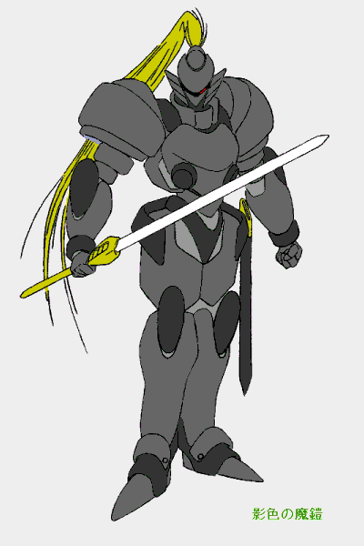

影の騎士
作：夜夢
第三話 “陰の騎士”
第一章：酒場より
…………
彼は騎士……
彼は若き騎士……
彼は強き騎士……
彼は賢き騎士……
彼は優しき騎士……
黒き駿馬に跨りて……
人形どもを率いて駆け行きて……
類稀なる勇士とならん……
されど、天命報いなく……
彼は背臣の刃に倒れ伏す……
冥穴護りし聖獣の猛き遥かな咆哮と……
冥界神の優しき囁きが……
彼を冥府へ誘えり……
しかれど、彼は冥神の使いの御手を振りきって……
冥境の女王に請い願う……
そして、彼は報えぬ思いを叶えんと……
彼はこの地へ帰り来る……
その目は禍々しき火を宿せども……
その身は影闇に堕ちようと……
彼は優しき騎士なれば……
彼は賢き騎士なれば……
彼は強き騎士なれば……
我等は彼を称えよう……
彼は影の騎士……
彼は騎士シェユラス……
「…………」
酒場に響くその詩に、シェアナは思わず苦虫を噛んだような顔になる。ふと顔を巡らすと、そこには見知った詩人の姿があった。
彼女の顔が更に渋い物になる。
（……また、あいつか——）
渋い顔のまま、不味くなってしまった杯の中身を飲み干す。喉には果実酒独特の甘く芳しい香りではなく、酒精の嫌な喉越ししか感じられない。
詩人の名はリュッセル、彼の『影の騎士』伝説の編纂者である。様々な意味で、彼女は彼と会いたくなぞなかったのだが……
不満気に酒を呷る彼女に向かい、不意に声がかけられる。
「随分とご機嫌斜めのようですね、シェアナさん。」
その声に彼女ははっと身構える。そして、そこに座した人物を目にして肩の力を抜く。
「……セラーさん、驚かさないでくださいよ。」
行商人風の、質素だが洒落た衣装のその女性は軽く微笑む。彼女はカウンターに向かって軽い食事を注文した後、シェアナの方へと向き直った。
「そう身構えない方が良いですよ。なまじ美人がピリピリしていると、変な勘繰りをする人が出るものですし……私も経験ありますからね。」
「……はぁ、そう言うものですか——」
セラーの忠告に、シェアナは少し呆けたような返事をした。その様子に微苦笑を浮かべたまま、セラーは言葉を返した。
「そう言うものです。でも、色々と武勇伝は広まっていまますよ。」
「…………」
セラーのその言葉に、シェアナはあの詩人の詩が耳に入った時と同じような、渋い表情を浮かべていた。それに気付いてか、気付かずにか、セラーは話題を変えてきた。
「ところで、ポルたちが見えませんが？」
「ポルはここの二階に、他は郊外の空き家に……」
シェアナの返事に、セラーは軽く頭を上下させて、呟くように言葉を漏らす。
「……そう、その方が良いでしょうね——」
「セラーさん、貴方はどうしてここに？」
それを聞くとセラーは軽く笑い、一息してから答えた。
「……私がこうして出てくると言えば、決まっているでしょう。それと、貴方たちに渡す物があったからですけどね……ま、それも後にしましょう。」
きり良く、そこに二人の食事が運ばれてくる。
「……詳しいことは、食後に——」
そう言ってセラーは、優雅な物腰で運ばれてきた料理を口にし始めたのだった。
食事も一段落しようかと言う頃、二人の座る卓に、何処か無遠慮な声がかけられた。
「いやぁ〜あ、これはシェアナさんではあ〜りませんか！ ここで出会えとは光栄の至り。天上の神々の裁量に感謝の言葉が尽きぬ思いです。」
（…………）
声を聞いたシェアナは、半ば憮然と、半ば冷然として声のした方を振り向いた。彼女の目に映ったのは、一詩吟じた後で彼女に気付いた、くだんの詩人が声も高らかに近付いてくる姿であった。
「シェアナさん、本当に貴女のようにお美しい方との出会いは、まさに人生最高の喜びと言う……」
「黙れ」
「……そ、そんなぁ〜、私と貴女の仲ではありませんか——」
「うるさい」
そんな二人の掛け合いが交わされる中、一人取り残される格好になった人物から問いがかけられた。
「シェアナさん、こちらの方はどなたなのかしら……？」
その言葉で、二人はその場にもう一人の人物がいたことを思い出し、彼女の方へと首を廻らす。その人物は、二人の掛け合いを優雅な笑みを浮かべて眺めていた。
「セラーさん……この男は吟遊詩人のリュッセルと言う奴です。……こちらは私の知人で、セラーさんです。」
セラーの問いかけに、シェアナはセラーとリュッセルをお互いに紹介する。その言葉に呼応して、二人も互いに向けて軽い自己紹介を行う。
「はじめまして、兵器商を営むセラーと申します。」
「こちらこそ……いやぁ、類は友を呼ぶと申しますか、また貴女もお美しく……私、リュッセルと申す旅の詩人でございます。どうぞお見知りおきを——」
「詩人とおっしゃいますと、どのような詩を……？」
「恋歌、英雄伝、昔語りに先頃事、お望みなら叙事詩も叙情詩も歌わせていただきます。ただ、今は
“影の騎士” についての詩を編纂中でございまして……」
こうして、シェアナ以外は和気あいあいと語り合い、シェアナは渋い顔で酒と料理を呑み込む……そんな時が暫し流れた。
第二章：廃屋にて
街の郊外、ある廃屋へ密かに向かう荷馬車が一台……
そこには四人の人影が乗っている。
一人は女性。四人の中で一番優雅な物腰の美女……惜しむらくはその身は痩身で、女性らしい柔らかな起伏に欠けている。一人は女性。四人の中でもっとも長身の女性……しなやかに鍛えられた身体と凛々しさを放つ視線の合間に、その美しさが仄かに煌めいている。そして、残る二人は背も低く、その身を厚手のマントに、顔はフードを目深に被って窺いみることもできない。
フードを被った一人が、黙々として馬車をある廃屋へと御していく。
「ふゅにゅうぅぅぅぅるぃゅゅゅゅ」
「ぶぅうぅ〜」
廃屋に入ってすぐ、フードを被っていた者たちはそれを払い除けた。
「良く辛抱したわね、二人とも。良い子だわ……」
「きゅにゃゅぅ！」
「ぞんなに苦じゃないし……」
くつろぐ二人に女性——セラーがいたわりの言葉をかける。
二人は照れ臭そうにその言葉を受け取った。二人とも褐色の肌と先の鋭った耳を持っている。一人は唇から八重歯の様な牙の見える少女、その背には畳んでいた大きな皮翼を思い切り広げている。もう一人は醜い鷲っ鼻と禿げ上がった頭の男、しかし、その目は純粋な少年の心を残しているのが良く分かる澄んだ輝きを映している。
この一見ちぐはぐな面々は、多少変わった間柄だが、一応は家族と呼んで良い仲の者たちだ。痩身の美女セラー、妖魔の子ポルとブルクル……皆、迫害され居場所を失っていたところを隠者ファルト老に拾われた者たちだ。
三人が細やかな団らんの時を楽しんでいる時、一人それを眺めている女性があった。シェアナである。シェアナこと騎士シェユラス＝ロフトは奸計により死地に追いやられ、辛くもファルト老に助けられた者であり、彼女もまた彼等の家族と言えた。しかし、彼女は老たちの制止を振りきって、こうして旅に出ている。その蟠りが、彼女に彼等へ近寄る一歩を躊躇わせていた。
そんな彼女の心を知る愛馬は、冷たいながらも自らの頬を主に刷り寄せた。彼女にはそんな愛馬のけなげさに瞳を潤ませる。
その姿を見た有翼の少女は、細やかな憂いと微かの嫉妬を含んだ思いを心の隅に感じていた。
一息付いた所で、セラーは改まった様子でシェアナに語りかけた。
「シェアナさん、貴方のことは風の噂で幾らか伺っていました。貴方の活躍を、私たちは嬉しさと心配とを胸に聞いていました。……それで、貴方に改めて贈り物を持ってきたんです。」
「……そ、そんな——」
シェアナは改まったセラーの様子に、ただ面食らっていた。そこに、ブルクルが声をかける。
「シェアナざん……これ、俺が造った……」
おずおずとそう言って彼が差し出したのは、一振りの細身の長剣であった。
「……これは？」
「俺がファー爺から金屑貰って、一人で造った……」
彼女は差し出された剣を受け取り、鞘から抜いてみた。その刀身は幾種もの金属の融合された結果複雑な模様が浮かび上がっている。よくよく見れば、その芯は軽く粘りのある飛行金や神銀等、刃は堅固な固さを誇る剛鋼や神銀等と場所に合わせて高価な魔法金属まで使われた、魔力を帯びた業物である。その見事な剣に彼女から感嘆の色を帯びた感謝の言葉が漏れる。
「ありがとう……」
シェアナの言葉に、感謝の言葉はまだ早いとばかりにセラーから言葉がかかる。
「まだあるわ……これを見て」
その声に彼女が振り向くと、荷馬車よりセラーが幾つかの品物を取り出していた。それ等は、一つは水晶球であり、他はドールの外装に見えた。しかし、ファルト老の手による物にしては、その外装は錆の浮いた古びた物に見える。首を傾げるシェアナに、セラーは説明を始める。
「その水晶球はユロシア産の純正の魔法のかかった品で、対の水晶を持つ相手と交信できるの。対の水晶はファルト様が持っておられるから、困った時は相談なさい。」
ユロシア——北方大陸の魔道具は、西方大陸で如何に貴重な品かシェアナは知っていた。隠れ家を飛び出した自分に、魔鎧の他にもこのような高価な物を贈る老の心に驚きを禁じ得なかった。
「それから、この甲板は魔鎧とシャーフィールの偽装用に使うようにとのことでしたよ。」
「…………」
その言葉に、シェアナは驚きと感謝の念で一瞬言葉を忘れた。
この偽装には、大きな意味がある。
西方大陸において、各地で古代王国期の遺物は発見されているが、その殆んどは王国に兵器として徴収される。よって、ドールを個人的に所有するのは、貴族や豪商、もしくはそれらを扱う兵器商人や冒険者と呼ばれる発掘請け負い人など一部の者に限られる。
“黒き鋼馬” シャーフィールの名は、騎士シェユラスの名とともに広く知られており、その事実を割り引いても、このような上質のドールホースがを市井の者が連れ歩くのは不自然と言えるし、当然人々の注目を集めやすい。……まして、“影色の魔鎧”
のような特殊な魔法機械ならば尚更である。
故に、街道を避け、郊外に繋ぐなどしてシェアナは愛馬と魔鎧を人目に付かせぬよう細心の注意を図っていたのだ。
偽装は、ブルクルの手によってなされていった。このブラウニー族の少年は巧妙に、しかし容易に行えるように外装を鋼馬達に合わせて微調整して行く。
暫くしてそこにあるのは、使用限界に達したドールとドールホースに見えるものたちがあるばかり……
第三章：陰の騎士伝説
ブルクルの偽装作業の間に、シェアナとセラーたちは、互いの近況を語り合った。
セラーは、ファルト老をはじめとする皆が、シェアナとポルを心配していたことや、その為にファルト老たちが工房で色々な魔法機械の修繕をしていたこと等を話した。彼女は外見的に普通の人との差異が少ないゆえに、外の世界へ必需品を入手しにいく役を務めていることもあり、ファルト老たちの贈り物を預かって、シェアナたちをそれとなく探していたらしい。
そうしているうちに、“影の騎士” の噂を聞き、その噂を追ってここに辿り着いたらしい。
シェアナの方は、その実態と噂を助長させるリュッセルのこと等を話していく。
話が進む中、セラーがふと些細な疑問を口にした。
「そう言えば、リュッセルさんは “陰の騎士”
と貴方とを混同してこの地を訪れた——って言っていたようですけど……
“陰の騎士” と言うのは？」
その問いにハッとするシェアナ、暫くして彼女は説明を始めた。その表情は何処か暗いものに変わっていた。
「私も、ここがその町だとは知りませんでしたが……
“陰の騎士” の伝説は、私たちフォーサイトの騎士の間では公然の秘密として語られていたことです——」
そう言って、彼女はゆっくりと “陰の騎士”
の伝説を語り出した。
それは、古代アティス王国が既に崩壊し、竜の時代も過ぎて幾ばくも経っていなかった頃、新王国黎明の時代の話……
当時、建国して間もないフォーサイトは、古代アティスの遺産を手にした強国センタサイトによる侵略の脅威にさらされていた。ゆえに国家事業として、竜の時代の間に埋もれてしまった古代遺跡の発見と、その中に保管されている遺物の入手を緊急かつ大々的に行っていた。……勿論、その他の諸王国にしても、同様のことは行われていた。
……後の世に言う、「大発掘時代」と呼ばれる時代である。
この時代に各国は、後世自軍の主戦力となる魔法機械の供給源となる、主要遺跡の発見が続くことになる。
“陰の騎士” とは、そんな大遺跡を巡る悲劇の伝説なのだ。
その騎士は、ある辺境の町において、その近郊に遺跡が眠っていることを突き止め、少数の仲間とともに遺跡に入り、数多くの魔法機械類の眠る格納庫の発見に成功した。そして、そこにあったドール数体を連れて王都に凱旋した。
騎士はこの功績からその遺跡一帯を所領として授かり、遺物の数点かの占有も許可され、その遺跡の大規模な発掘の準備を進めていった。
しかし、このような大規模な遺跡の発見の報が、他国にとってどれ程の衝撃であったかは想像に難くない。……ましてやそれが辺境で発見されたことは、隣国の野心を掻立てるに十分過ぎる条件であったと言えた。
そのような背景の元で行われた隣国セクサイトの電撃的侵攻を、遺跡の調査を行っていたその騎士の持つ兵力で防ぎきることは、到底不可能であった。王都への援軍要請の使者が到達した時、彼の騎士は敵軍の刃に倒れた後であったと伝えられている。
それは、大発掘時代の古代遺跡発見の際に生じた数々の悲劇の一つである。……だが、話はこれだけでは終わらなかった。
彼は強靭な肉体と精神を持ち、王国に絶対の忠誠を誓う、理想的な騎士であった。それ等がこの時、災いした。彼の「国の為、この遺跡を死守する」と言う執念は、その強靭な精神力を支えに一つの奇跡を呼び起こしたのだ。
それは冥境の女王、魔王クルガセドアの使徒との契約を結ぶこと……即ち、自らの死を
“不死の亡者” となることで乗り越える——というものであった。
幽霊騎士となった彼は、その不死身の身体を駆使して侵攻軍を全滅に追いやった。しかし、彼は魔王の使徒と契約したが故にか、それとも非業の死であったが故にか……狂ってしまっていた。
騎士は使者の報を聞き駆け付けた援軍をもその手で滅ぼし、遺跡の中へと姿を消していったのだった。
以来、遺跡に近い町では毎年、その命日に遺跡の一帯を巡回する幽霊騎士の目撃談が囁かれるようになり……その遺跡への侵入も、彼の騎士の為に試みることすら叶わないというありさまになった。フォーサイトとしても、彼の騎士の説得や排除を数代に渡り試みたが、その騎士としての類稀なる力量と堅固な意思を挫くことは、終には果たせなかった。
そして、時の王が箝口令をしき、彼の騎士と彼の遺跡の存在を隠蔽し、それ等を示す資料等も抹消し……全ては「なかったこと」として扱われるようになったのである。しかし、この事実は騎士団と遺跡近郊の町で、密やかに代々語り継がれていったのであった。
この伝説を語り終えた後、彼女は暫し遠い目をして項垂れた。その騎士の気持が何処か分かるような気がして、悲しくなったからだ。心ならずも彼女の伏せた顔の下の床が、数滴のしずくに濡れる。その時、彼女の裾を引き、慰めるように語りかける声が聞こえた。
「うゅぃぅぅぅ……」
「……ポル」
服の裾を引く感触にシェアナが顔を巡らすと、そのには気遣わしげに自分を見つめる褐色の肌の少女の姿があった。
「…………」
自分を心配するこの少女がいとおしくて、シェアナはポルを抱き締めていた。
第四章：聖霊の願い
廃屋で思わず感傷的になった自分を思い出し、その晩シェアナはなかなか寝付けなかった。彼女がまどろみ始めたのは、闇神竜が天頂を過ぎた—夜半を大きく過ぎた—後の頃であった。
（…………）
まどろみの中、彼女は何か、自分に呼び掛ける者の存在を感じていた。
（…………ラス……士——）
しかし、その呼びかけをはっきりと聞き取ることは出来ずにいた。
やがて睡魔は、彼女に本当の眠りをもたらして行った。
「騎士シェユラス…… “影の騎士” よ……」
遠くからとも、近くからとも分からぬいずこかより、彼女を呼ぶ声がする。その声に彼女は誰何の声を上げる。
「誰だ……？ ……私を呼ぶのは誰だ……？」
その声で気付く。自分が「シェアナ」ではなく、シェユラスの姿となっていることに……
しかし、良く見れば違う……その姿は刻々と変化を繰り返し、その姿はシェアナとシェユラス、そのどちらでもあり、どちらでもないような不可思議な姿に見えていた。刻々と変化する自身の姿に驚いていると、先程の呼び声が間近と思える場所で聞こえてきた。
「……ここは貴方の夢であり、冥界である所、その存在自身が、意識する姿を取り得る所——」
声の聞こえた方に注意を向ける。そこに立っていたのは背より紫の輝きを放つ、翼を持った一人の女性……あるいは、背より紫の輝きを放つ翼を持つ一頭の白き犬であった。その姿を見て、シェアナは直感的に悟った。彼女が聖霊であると——
「その通り……私は冥界神の神獣クルガールムに仕える聖霊、クレアと言います。」
その言葉に、彼女が慌てる。
「待ってください！ 聖霊とは、神官でなければ姿を見る事も、声を聞く事も叶わない筈——」
狼狽の色を見せる彼女に、聖霊は幼子を諭すような優しい口調で語りかけてきた。
「……その通り。普通には貴方の言うことは正しい……しかし、時により、そうではないのです。」
「…………！ ……もしや私を冥界へと引き戻す為に……？」
聖霊のその言葉に不吉な解釈をしたシェアナは、身構えるように問いを絞り出していた。その問いに、聖霊はゆっくりとした仕草で首を振る。
「……いいえ、貴方はれっきとした生者……私の管轄しうる者ではありません。私は、貴方に助力を仰ぐ為、ここにいるのです。」
「助力……？」
聖霊の予想外の言葉に、シェアナは呆然と呟く。
「……ええ、お願いです。アルバート、“陰の騎士”
を冥界へ送ることに協力を——」
そうして、聖霊は切々とした様子で言葉を紡ぎ始めたのであった。
「そう、そんな事があったの……」
朝食とともに出されたコーヒーを優雅な手付きで飲みつつ、セラーは呟く。
その朝、シェアナはセラーたちを部屋に集め、昨夜起こった驚くべき体験を語った。
「生憎、私が心得ているのは古代王国期の帝国魔法しかないから……その聖霊の話が、本当か見極める事は出来ないわね」
心底残念そうな様子でセラーは言葉を口にする。すると、ポルが首にかけた石板に石墨を走らせた。
−シェアナの右肩辺りに、闇の精霊みたいな影がいるよ−
驚いて振り返るシェアナ。しかし、魔法の素養のない彼女には、ただ虚空があるのみである。
一方、セラーはポルの方に首を廻らし、少女の髪を撫ぜながら語りかける。
「そうなの……ポルは呪法舞踊の心得があるから、幾らか精霊魔法の素養がある筈……精霊を見る要領で聖霊を知覚してもおかしくないわね」
「セラー姉、闇みだい——っで、邪霊がな……？」
セラーたちの会話を何処か理解しかねる様子で、ブルクルが尋ねる。その問いにセラーは答える。
「……そうとは限らないわ。冥界神自身が闇とも関わりの深い神なのだし、闇であるから邪霊とは言い切れない。ただ、シェアナさんが見たのがただの夢ではないのは、間違いないでしょうね。」
「…………」
セラーたちの会話を聞きながら、シェアナは深く黙考していた。彼女は五百年近くも狂い続けている哀れな騎士と、彼に届かぬ声を必死に叫び続ける一人の聖霊のことを思っていた。
黙考しているシェアナに向け、セラーは語りかける。
「……で、シェアナさんとしては、どうしたいのです？」
「今夜、遺跡へ赴いてみます。……ポル、今回は危険だからセラーさんたちと待っていてくれ」
セラーの問いにシェアナは静かに答え、ついでポルに優しい視線とともにそう語りかけた。
しかし、少女は彼女の袖を掴んで首を振る。
「にゅぃゃゅぃぃぃ……」
「ただをこねないで……ね。」
そうして、シェアナはポルの説得に、遺跡へ出発する間際までかかることになった。
町の郊外、誰もに忘れ去られたかの如くたたずむ、巨大な建築物の面影を一部残す瓦礫の山——
ここが、彼の “陰の騎士” の護りし遺跡である。
そこに訪れた漆黒の騎影。夕闇の中で不気味な程、その情景は絵になっていた。
彼の騎影こそ、“影の騎士” である。彼は、ゆっくりと慎重に遺跡に向かい進んでいく。
やがて、彼の耳は錆びた鋼の鈍い音を聞き捉える……鎧の擦れる音、剣を引き抜く音、鉄靴の響き……それ等は一つではない。五……十……二十……三十人近くの兵が近付きつつあると読める。数を聞き分けているうちに、遺跡より一人、また一人と姿を表す。
それ等は人ではなかった……いや、もう人ではない者たちだった。皮は乾き剥がれ、肉は腐り落ち、骨しか残らぬかつての騎士の屍が、赤錆びた剣と鎧でこちらに向かってくる。
それら骸骨騎士の鎧は、様々な時代のフォーサイトやセクサイトの物が並んでいて、統一したものではない。……それは即ち、この遺跡に臨み、そして
“陰の騎士” の犠牲となった者たちであることを意味していた。
遺跡の周囲に姿を現したそれらの「もの」たちに向かい、“影の騎士”
はおもむろに剣を抜き、朗々とした声で名乗りを上げた。
「私はかつてフォーサイト鉄騎騎団部隊長を務めし者で、名をシェユラス＝ロフト。……故あって、この地の主たる
“陰の騎士” アルバート殿に話があって来た。」

名乗りを上げた “影の騎士” が待つ事暫し……遺跡より古式の完全甲冑を身に纏った巨漢の戦士が姿を顕した。その身はもう五百年も前に朽ちた筈であるのに、その鎧や剣は磨かれたばかりの如き光沢を感じる。……しかし、その瞳は妖光を宿し、鎧の隙間から窺える彼の身体は闇か影の如き不確かなものに見えた。
第五章：夜闇が深まりし時に
異形の騎士の一騎打ちに少し前後する頃、遺跡を望める空に一つの暗色の翼があった。……ポル＝ポリーである。
彼女は、彼女を見張っていたセラーたちの隙をついて抜け出してきたのだ。ここのところ、人目を忍ぶ旅をし、シェアナの為に行ってきた偵察していたことなどの経験が、彼女の脱出を容易にさせていた。
彼女は遺跡に急ぐ、今までシェアナが剣を振るう時は何時も付いていった。“影の騎士”
の側にいて、彼女は何らかの役に立ちたかった。その思いが、彼女の翔きに力を与えていた。
そんなポルの視界に奇妙な一団が映ったのは、偶然であった。彼女はその一団に目を落とす。
密かに遺跡に向かう、一本の棒杖を持った長衣の者を囲む暗色の動き易い衣装に身を包む数人の者たち。
彼女は翔きを止め、やや高度を落とした上で、耳を澄ませる。その時、彼等の言葉の断片を聞き取ることができた。
「…………任務……」
「……フォーサイトからの奪取…………」
「…………支配…… “陰の騎士” ——」
「——セクサイトを勝利……」
「……！！」
話の内容は理解しきれなかったけれど、聞き取れた言葉の不穏な内容に、彼女は
“影の騎士” の危機を直感した。緊張が走った彼女に隙ができたのか、下の黒装束の男の一人が顔を上げた。
「……何者！」
黒装束の叫びとともに、男から上空の彼女に向け、一条の閃きが走る。
「ぎゅぃにぃゃぁぁぁぁぁぁっ！」
ポルは突如襲った衝撃に悲鳴を上げた。左の翼にナイフが突き刺さっていた。彼女がそれを抜く間もなく、呪文の詠唱が聞こえた。咄嗟に相手に背を向け、逃げようとする。彼女の無茶な翔きの為に、刃の刺さった翼が引攣り、ナイフによる傷が拡がる。そこへ、魔法による爆風が彼女の背を焼いた。
痛みに身を焼かれながらも、彼女は自身の翼を更に強く翔かせた。このことを遺跡へ伝える為に——
爆風に吹き飛ばされながらも、その場を飛び去る風妖の影を眺めやり、男の一人が呟く。
「逃がしたか……」
「しかし、そう遠くへは逃げられまい。あの傷だ……あと数翔きで翼はオシャカさ」
呟きを漏らした男の下に別の男が声をかける。その声をかけた男に一瞥を向けた後、一団の皆に向け静かに言い放つ。
「…………急ぐぞ……いずれにしろ、遺跡の強襲は難しくなった事に変わりはない——」
男たちは再び黙々と走り始めた。
彼等はセクサイトの密偵部隊の者たちであった。彼等は、過日の魔導砲の強襲による損失の補填の一貫として、この地域にある遺跡の奪取の任務を与えられていたのだった。
彼等とて “陰の騎士” の伝説を知らぬ筈はない。むしろ、セクサイト軍内部の方が、フォーサイトのそれより詳細に伝わっていると言えよう。セクサイトとて、密かにあるいは公然とこの遺跡の奪取を幾度となく試みていたのである。
そのような背景を持ちながら、彼等が少人数で行動するのは重要な意味がある。一つは、これが隠密性の高い任務ということ。……フォーサイトには知られずに遂行しなくてはならない。一つは、無駄に人数を揃えれば、それがそのまま敵戦力に化ける危険性があると言うこと。そしてもう一つは、“陰の騎士”
対策の為の秘密兵器があるという自信からだ。
しかし、彼等は思わぬ失態を犯した。暗闇でしかとは確認できなかったが、風の妖精らしき者に話を聞かれたことだ。……しかも、打ち漏らした挙げ句に、遺跡方面に逃げられてしまった。これは後々、任務の障害となりうる。
しかし、それは致命的なものではないと判断し、彼等は遺跡へ急いだ。任務を速やかに遂行する為に——
一方、遺跡の前で繰り広げられていた異形の騎士同士の一騎打ちが手詰まりとなって暫し……今度は
“影の騎士” が焦り始めた。
（……やはり……まずい……な、このままでは——）
戦闘による緊張は、精神を大いに消耗させる。しかし、相手は既に死せる亡者……その種の消耗に無縁と言える。このまま消耗戦に縺れ込めば、今度はこちらが不利になってくる。
そんな決闘の場に墜落してきた者があった。その姿を確認したシェアナは、驚きに声を上げる。
「……！ ポルっ！！」
そこに落ちて来たのは、ポル＝ポリーであった。シェアナは前後のことも忘れ、少女を抱き上げる。その背側は何かに焙られたように火傷があり、その左翼は無惨な程に裂け破れている。
「どうして……しっかりしろ、ポルっ！」
騎士の呼び掛けに少女は目を開き、覚束なくも石板に単語を羅列する。
−セクサイト−
−黒尽くめ−
−遺跡を襲う−
−……の支配−
素早く石板に羅列された文字群を読み解いた
“影の騎士” は問う。
「……セクサイトの密偵たちがここを襲うというのか？」
その問いに、少女は弱々しく頷いた。騎士は振り返り、もう一人の騎士に問掛けた。
「“陰の騎士”……いやアルバート殿、ここへセクサイトの者たちが向かっているそうです。いかがなされます？」
その言葉に、“影の騎士” に剣を向けていた
“陰の騎士” は即座に答えを返す。
（……セクサイトノモノナド、ハイジョスルニキマッテイル……）
「微力ながら貴方に御助力します。私も貴方と同じフォーサイトの騎士ですから……よろしいですね？」
（…………カッテニシロ……）
“陰の騎士” は “影の騎士” の害意の無さに気付いてか、新たな真の敵を前にした為か、彼等を黙認した。
まさにその時、その場に黒装束の男たちが現れた。
第六章：深き闇が晴れし時
黒装束の男たちの出現に、二人の騎士とその従者たちに全く動揺はなかった。この事態を予測していたことと、彼等の殆んどが動揺する等と言う感情を持ち合わせていなかったからである。
「……！！」
しかし、黒装束の男たちに動揺は存在した。“陰の騎士”
が二人いる！ この予想外の事態に、半数の者が怯んだ。
（……ユケ…………！）
その動揺に乗じて、“陰の騎士” は配下に号令をかけた。骸骨戦士は、声無き鬨の声を上げ、怒涛の如く敵に迫った。機を見計らい、二人の騎士も突撃を開始する。
一方、負傷したポルは “影の騎士” の命を受けた彼の鋼馬に乗せられ、少し離れた場所からその光景を見詰めていた。痛みと疲労で霞む視界の中、怯んだ敵に怒涛の如く迫る様子は、彼女の目にも
“影の騎士” 達の優勢に映った。
しかし、それも、敵の中の長衣を纏った男が棒杖を掲げた時に覆った。
「『偉大なる魔力により亡者どもに命ず……我に従え！』」
その叫びは “古代魔法語” あるいは “帝国魔法語”
と呼ばれるものであった。この叫びに呼応して、棒杖は怪しき暗き光を放ち出した。その暗き光は、戦場に立つ者たちに等しく降りかかった。
次の瞬間、骸骨戦士たちの動きが一斉に止まった。
（……ウウウッ……グゥゥゥ——）
更に、“陰の騎士” も頭を押さえて蹲る。痛みを忘れた死せる者らしくもなく、その声には大きな苦痛の響きがあった。
暫し後、やや疲労を窺わせながらも “陰の騎士”
は立ち上がり、敵に剣を構えた。しかしその時、彼の眷属は皆、彼に刃を向けていたのだった。
……それは “亡者支配の棒杖” と呼ばれる魔法具である。杖に付与された魔力により、アンデッドと呼ばれる存在たちを持ち主の意の侭にするのだ。
セクサイトはこれを入手する為、最高品質の鉱石や魔法機械類多数を北方大陸の貿易商に支払っていた。
その効果は絶大であった。流石に “陰の騎士”
当人は支配しきれなかったものの、その眷属数十体をこちらに引き込み、“陰の騎士”
も杖の魔力に抗う為、全力を出し切れずにいる。形勢は見事に逆転していた。
セクサイトの密偵たちは策の成功に勇気付けられ、二体の
“陰の騎士” を追い詰めるべく更に勇戦する。
（……ウグッッッ…………！）
自らの眷属である骸骨騎士の一撃を受け、“陰の騎士”
の甲冑にヒビが走る。
「……アルバート殿……大丈夫……ですか……？」
（…………シンパイハ……ムヨウ……ダ！）
声をかけてくる “影の騎士” に言葉を返し、“陰の騎士”
は一撃を放ってきた骸骨を一刀の下に切り捨てる。しかし、間断なく攻め寄せる骸骨たちを粉砕する為、二人の騎士はお互いの様子を深く窺うことさえ難しくなってきている。加えて、先程までの一騎打ちの影響が、両者の腕を増々鈍らせていた。
このままでは殺られる…………その言葉がシェアナの脳裏を霞めた時、ある鋼の塊が躍り込んで来た。
この時より少し遡る。形勢の覆った情景を少女は青褪めた顔で凝視していた。そして、決意を込めて鋼馬から降りた。怪訝な様子の鋼馬をよそに、彼女は四肢を指先までピンと伸ばす。それは彼女が舞いを始める構え……
シャーフィールは思わず停めようと駆け寄る。しかし、彼女の瞳に宿る決意に射抜かれ、それを断念した。……そして、鋼馬は戦場に向け駆け始める。さながら天を翔ける天馬の如く——
駆け去る鋼馬を横目に見ながら、彼女は踊り始めた……その周りを一つ、また一つと赤き輝きを放つものが集まってくる。夜闇の中、仄かに赤い光を纏わせながら、少女は艶やかで畏るべき舞を舞い続ける。
「シャーフィール！」
（……しゃーふぃーる？）
思わぬ援軍に、シェアナは驚きと喜びの声を上げる。その声に
“陰の騎士” から一瞬怪訝そうな呟きが漏れる。
その主の言葉に答えるかのように、影色のメタルホースは骸骨たちの囲みに駆け込み、それらを轢き倒し、踏み潰し、蹴り上げた。一陣の鋼の風は、心無き敵を瞬く間に打ち砕いていった。
この不意打ちは、密偵たちの虚を突く物であった。突如彼方から現れたドールホースのこともあるが、そのドールホースが主に命ぜられもせずに敵陣に乗り込み、蹄を振るう等……戦闘用のドールビーストならともかく、騎乗用のそれが自ら戦闘を行うなど、彼等の常識外の話であった。
しかし、彼等も素人ではない。すぐ気を取り直して陣形を組みかえる。そして、魔法の炎が鋼馬を焼く。
身を焼かれ、鋼馬は血色の煙を上げて苦しげな嘶きを上げる。
シャーフィールの参戦により態勢が持ち直しつつあった時、シェアナの耳にその悲鳴が届いた。愛馬の方へ振り向く彼女の耳に、とどめとばかりに紡ぎ出される次の呪文の詠唱が響いた。
魔法を放った杖の男の視線の先には、苦痛に呻くシャーフィールと、その援護まわっていた
“陰の騎士” の姿があった。男は再度の形勢逆転を確信し、その顔を微かに歪ませる。
その時 “影の騎士” は、“陰の騎士” と鋼馬の元に駆け寄る。
「危ない！」
“影の騎士” が駆けつけた次の瞬間、男の呪文は完成した。
圧倒的な紅蓮の爆炎が、二人と一体を包むかに見えた刹那、その炎を闇色の霞が覆い隠した。
「何……！？」
魔術使いは、この不可解な現象に目を見張った。
そして一刹那後、我を忘れ立ち竦む魔法使いの目前に闇の霞より黒鋼の鬼神が現れ、彼を一刀の元に叩き斬る……断末魔を上げることも——いや、恐怖を感じさせる暇も与えられず、魔法使いはその命脈を絶たれたのだった。
音もなく崩れ落ちる “魔法使いだった” 二つの物体を横目に見ながら、密偵の一人は思考を巡らせる。
すでに骸骨は少なく、切札も絶えた今、それ等を操る事も叶わぬ……
敵は負傷しているとはいえ、戦力的にはこちらが不利なのは先の斬撃を見れば明らか——
「……撤退だ……撤退するっ！」
そう指示を出し、彼等はすぐさま退き始める。……しかし、その決断は一刹那遅かった。
無数の赤い光球が撤退し始めた彼等を包み込み、次の一瞬紅蓮の炎となって彼等を焼き尽くしたのだった。
長い長い夜が明けようとしていた。
遺跡を背にした異形の騎士は、もう一人の騎士に声をかけた。
（……ソナタノオカゲデ、ニンムヲハタスコトガデキタ…………カンシャスル……）
一方の騎士は、炎の舞を舞って消耗している少女を気遣いつつ、騎士に答えを返す。
「いえ、私はフォーサイトの騎士として当然と思うことをしたまでです。」
その言葉を黙って聞いていた “陰の騎士” は、“影の騎士”
の傍らに控える彼の愛馬を見詰めながら、呟く。
（……ソノドールホース……しゃーふぃーるトイッタカ……？）
その問いに一瞬首を傾げながら、シェアナは答えを返した。
「……？ はい。私の家、ロフト家に代々伝わってきたドールホースです。」
（…………ヤハリ……ソナタニトウ、イマ、ナンネンニナル……？）
騎士の問いに、シェアナは息を呑んだ。そして彼の騎士の放っていた狂気が、出会った時に比して明らかに少なくなっている事にも気付く……
彼女は正直に事実を答えた。
「今年で、新王国歴542年になります。」
すると、異形の騎士は驚きを隠せないように言葉を漏らした。
（……オォ……おぉ……あの時からすでに五百年近い月日が過ぎていたのか…………そうか、もうそんなに——）
彼の内から狂気が去ったように、シェアナには見受けられた。
「お気付きに……なられたのですか……？」
（あぁ……私の名はアルバート＝ロフト。シャーフィールはこの遺跡で見付けた私の愛馬だ……）
そう言うと彼はシャーフィールの首を撫でる。鋼馬もかつての主人と悟ってか、騎士に首を刷り付けてきた。
その情景を眺めながら、何故聖霊は自分を頼ってきたのかを深く納得していた。
一時かつての愛馬と戯れた後、アルバートは
“影の騎士” へと向き直る。
（……もう一度、名を聞いておこうか。）
「私は、シェユラス＝ロフト……」
そう言った後、“影の騎士” は魔鎧の胸甲を開く。そして、自らの身を曝しながらシェアナは名乗りを続ける。
「……今は、ゆえあってシェアナ、と名乗っております。」
アルバート卿は暫し呆然としてから、笑った。最初に感じた不気味さの漂う声音でなく、豪放で悠然とした騎士らしい笑い声で……そして、一頻り笑った後、彼は彼女に向けて声をかけた。
（……気が付かなかった。大抵の物を見通す亡者の視界もその鎧の中までは見えなかった…………そうだな、その鎧の力なのだろう……冥界に旅立つ前に、そなたのような男に会えて光栄だ。……さらば。）
そう言うと、彼の肉体は本当の陰の如く実体を失い、その鎧は崩れ落ちた。そして、崩れ落ちた彼の鎧や剣は、悠久の時を思いだしたかのように急速に朽ち果てていった。
気が付けば、周りにいた骸骨の騎士達も風塵と化した後だった。
憐れな運命を過ごしていた亡者たちが去った遺跡を目にしながら、シェアナには聖霊クレアの感謝の言葉が聞こえた気がしていた。
こうして、後の世に “アルバート卿の遺跡”
と称される大遺跡は解放された。この経緯は、あの炎の中唯一生存したセクサイト密偵と、夜明けに
“影の騎士” の訪問を受けたこの町の町長によって、フォーサイト及びセクサイトの二国に知れ渡ることとなる。
（続く）
〈背景説明〉
第三回：メレテリア世界の死生観と亡者等について
この物語の世界であるメレテリア世界において、人（亜人を含む）が一生を終えると、その霊魂は本人の守護聖霊や冥界神の眷属である聖霊によって、「冥界神ネレセドア」の元に行き、「冥界神ネレセドア」とその眷属である上位聖霊により、その者の属すべき神界が何処かを裁定され、神界において生前の能力や徳目などで上位・中位・下位の何れかの聖霊に転生すると言われます。（この際、神霊の世界である神界でなく、魔王の世界である魔界へと赴くこととなった魂は、邪霊と呼ばれる存在になるとされます。）
聖霊は、基本的に地上世界の物事に介入することは出来ません。しかし、自身が守護する者に聖霊使いとしての資質があった場合、その者を介して自身の意思や力の一端を地上世界に示すことが出来ます。また、高位神官などであれば大抵の聖霊との意思疎通が可能です。
聖霊たちは一定の期間を聖霊として過ごした後、「地母神クレアフィリア」とその眷属である上位聖霊の裁定によって、人（亜人を含む）の身に転生すると言われます。（聖霊としての期間は、基本的には上位であるほど長く、下位では短いとされます。）
しかし、この転生のサイクルに囚われない存在も少数ながら存在します。
一つは、「神術師（仙人）」と呼ばれる存在です。
これはある条件を満たした人（亜人を含む）が、神族（聖獣や高位の神術師等）に認められることによって、下位神族の列に入ることにより生ずる存在です。それによって不死に近い存在へと変化します。神人の下位神・従属神とされる存在の何割かはこれに該当します。
しかし、この神術師と言う存在自体が稀少であり、その存在を知るものは非常に少ないのです。
そして、もう一つが、亡者（アンデッド）と呼ばれる存在です。
冥界神と対の存在とされる魔王「冥境の女王クルガセドア」とその眷属である邪霊の魔力を受けて、死体や霊魂の状態でこの世界に留まった存在です。一度死んでいる為、苦痛の類を受けることがなく、不死身と言える存在です。そして、その殆どは生前の記憶や精神を無くしているか、極度の狂気や妄執を持っており、その存在の維持の為に生物の精気を吸収する存在も多く、色々な意味で危険な存在となってます。
ただし、亡者とはその存在自体が不安定な為、下位の亡者では陽光や聖霊の力の前に崩壊する場合があります。
□ 感想はこちらに □